GAME
むなかた虫そだて日記
見つけて、そだてて、かえす
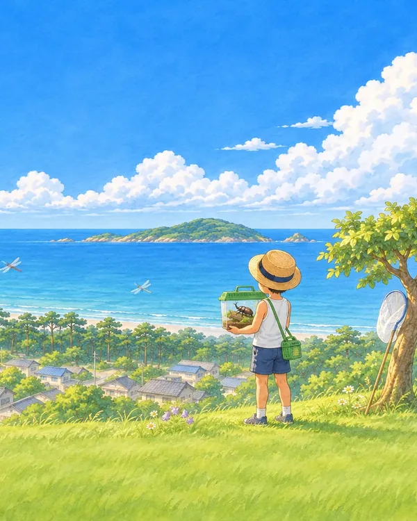
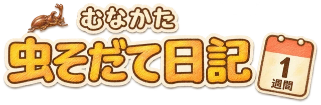
命の大切さを知る
新感覚の昆虫育成ゲーム
虫をそだてるのは、画面の大きなタブレットやパソコンがおすすめです。スマホは、外で虫をさがしてつかまえる「虫とり用」に。iPhone・iPad は Safari で開いて「共有 → ホーム画面に追加」すると、アプリのように全画面で遊べます。
どんなゲーム？
外でスマホを使って虫をさがしたり、カメラにおさめたりしてつかまえた虫を、おうちのタブレットやパソコンの虫かごでそだてる、命の大切さを知る新感覚の昆虫育成ゲームです。エサをあげたり、きりふきでしめらせたり、そうじをしたり。幼虫が脱皮して、さなぎになり、羽化するまでを見守って、さいごはもとの場所にかえします。
本物なら何か月もかかる虫の飼育を、ゲームの中では1週間ほどにちぢめています。飼いかたのこつや、むずかしいところ、命の大切さを、おうちの人といっしょに体験できます。
夏休み虫とりRPG「むなかた虫とり日記」の姉妹作です。
そとでスマホ、おうちでタブレット
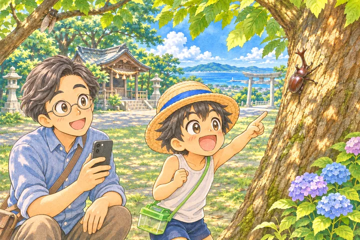
そと・スマホ
さがす・つかまえる
おうちの人のスマホを持って、公園や神社、川や海べへ。いまいる場所で、その場所らしい虫が見つかります。
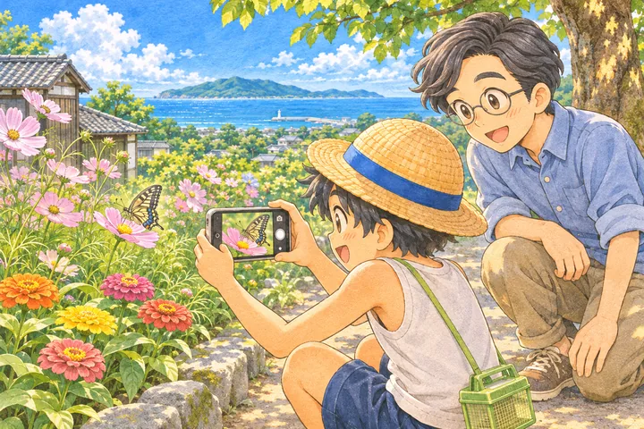
そと・スマホのカメラ
撮る
本物の虫を見つけたら、カメラでパチリ。「どの虫だった？」からえらぶと、その虫をつかまえられます。
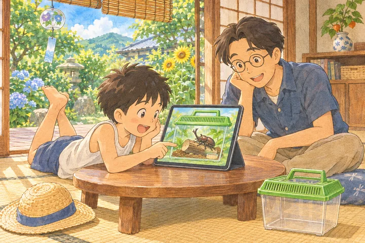
おうち・タブレット／パソコン
おうちでそだてる
つかまえた虫は、QRコードで おうちのタブレットやパソコンへ。エサ・きりふき・そうじをして、羽化したら もとの場所にかえそう。
※虫をそだてるのは、画面の大きなタブレット・パソコンがおすすめです。スマホは、外で虫をつかまえる「虫とり用」に。
幼虫 → さなぎ → 成虫
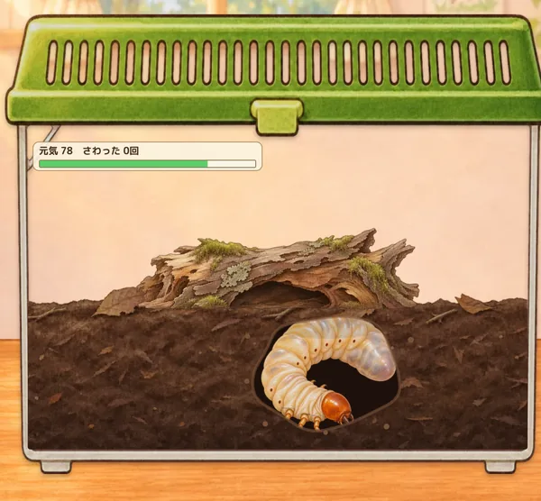
幼虫土の中で、くさった葉を食べて大きくなる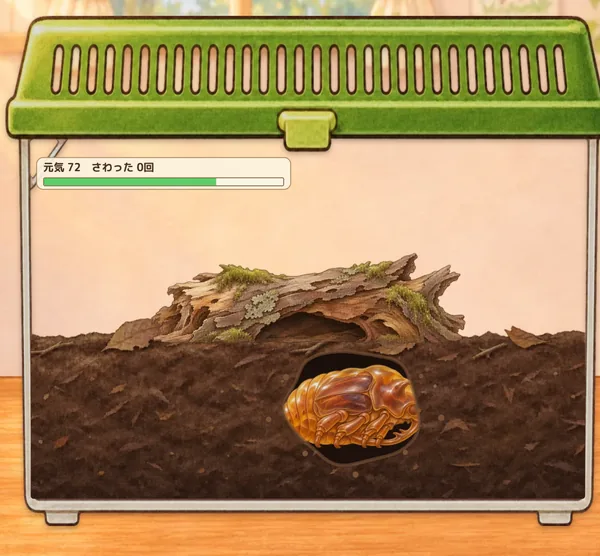
さなぎ土の中に部屋をつくって、じっとしている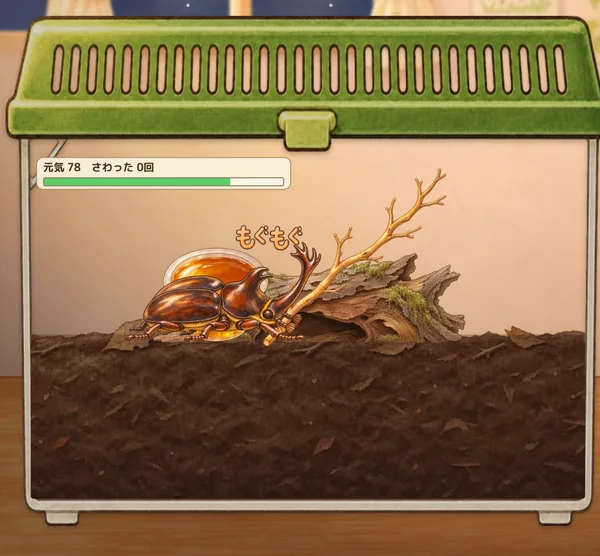
成虫夜になると出てきて、ゼリーをもぐもぐ
カブトムシ、クワガタ、チョウ、バッタ、スズムシ、ホタル…。虫によって、エサも、すきな土も、そだちかたもちがいます。観察ノートを見ながら、おなか・しめりけ・きれいさをととのえてあげよう。
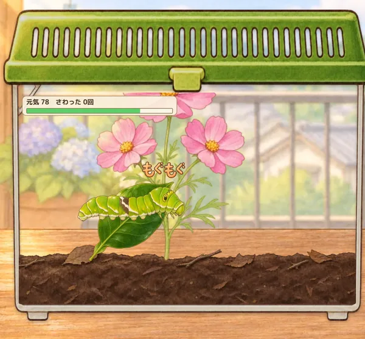
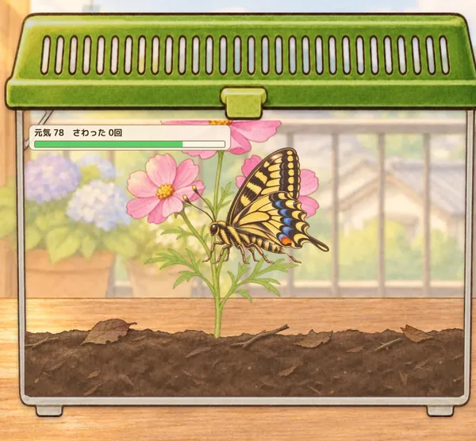
あそびかた
- 1
ストーリー
7月19日から8月31日までの夏休み。虫をそだてながら、宗像の6つの場所で出会う ふしぎを追いかける物語です。
- 2
じゆうに育てる
すきな場所で虫をさがして、すきなだけそだてよう。おみせ・虫ずもう・ずかんで、しるし（虫そだて名人・虫はかせ）をめざそう。
- 3
そとで虫をつかまえる（スマホ）
おうちの人のスマホで、いまいる場所の虫をさがそう。近くの公園や神社、川や海べなら、その場所らしい虫が見つかります。
- 4
おうちのタブレットにおくる
そとでつかまえた虫は、QRコードで おうちのタブレットやパソコンへ。帰ってから虫かごでそだてられます。
宗像の6つの場所
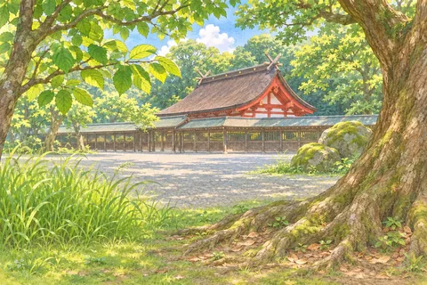
宗像大社クヌギの木の林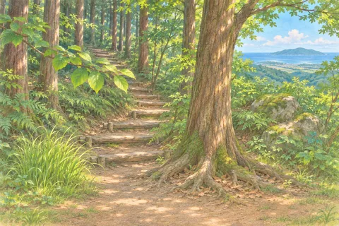
城山すずしい山道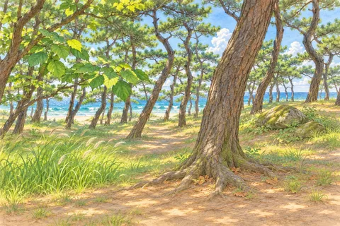
さつき松原海ぞいの松林- 釣川川べりと田んぼ
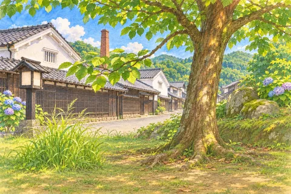
赤間宿通り古い町なみと庭先の畑 大島海ぞいの林
大島海ぞいの林
場所の絵は、本物の場所の写真をもとに描いています。ストーリーでは、神湊からフェリーで大島へわたったり、七夕の夜の中津宮や、御嶽山の展望所にも行きます。
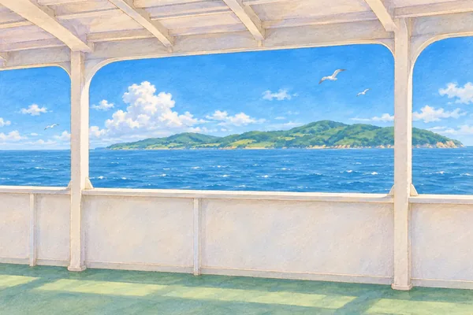
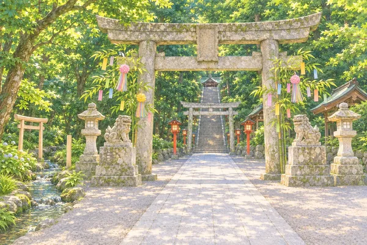
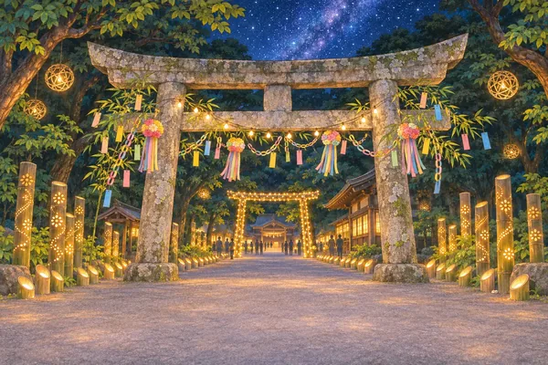
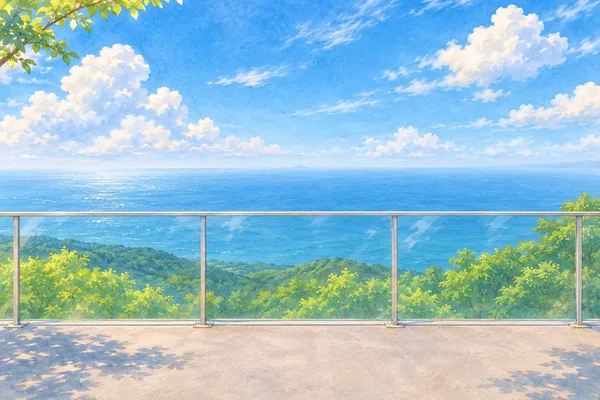
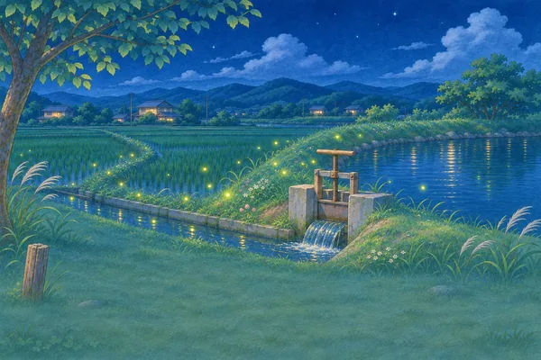
※ゲームに出てくる場所と虫の組み合わせはゲーム用のもので、実際にその場所にいる虫とはかぎりません。物語はフィクションです。
17しゅるいの虫
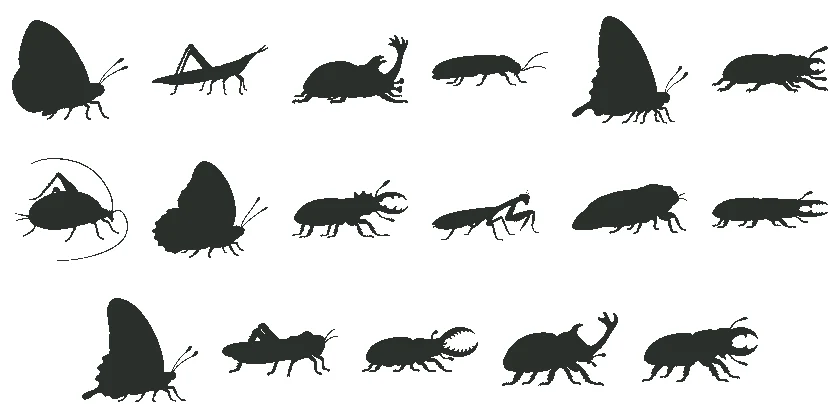
カブトムシ、クワガタ、チョウ、バッタ、ホタル、鳴く虫…。宗像の野山で見られる虫が出てきます。ずかんには、本物の虫の「じっさいは」も書いてあります。
※1しゅるいだけ、このゲームのための架空の昆虫がいます。ほかの16しゅるいは実在する昆虫です。「むなかた虫とり日記」で遊んでいると、いいことがあるかも…？
ゲームの画面
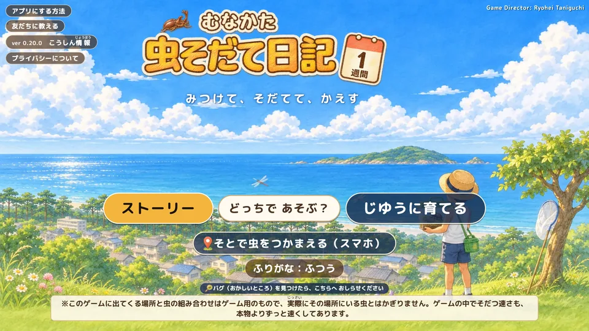
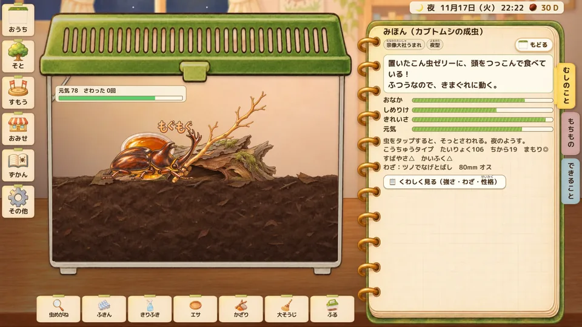
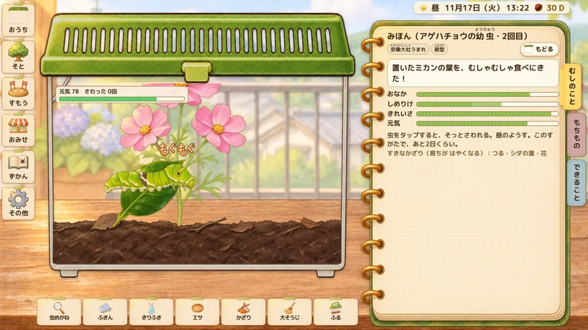
おうちの方へ
- ゲームの中で虫がそだつ速さは、本物よりずっと速くしています。本物の飼育の目安は、ずかんの「じっさいは」をごらんください。
- 外で虫をさがすときは、おうちの方もいっしょに。虫にはやさしくさわって、さいごは もとの場所にかえしてあげてください。
- 30分で休けいなど、あそぶ時間はおうちの方が決められます。ふりがなの量も切りかえられます。
- 位置情報は、近くの場所を調べるときだけ使って、すぐに捨てます。保存も送信もしません。
- ゲームのセーブは、遊んでいる端末のブラウザに保存されます。
- しくみをよくするために、アクセス解析（Googleアナリティクス）を使っています。ゲームの「プライバシーについて」から、計測しないようにもできます。